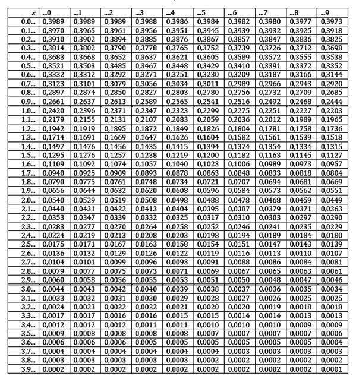
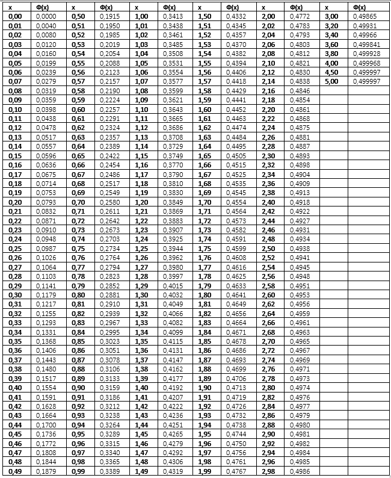
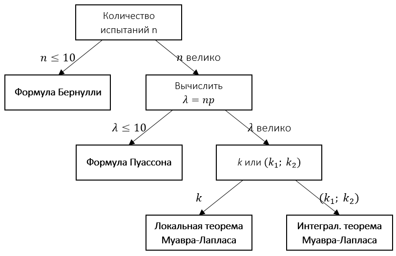

6 ПОВТОРНЫЕ ИСПЫТАНИЯ
6.1 НЕЗАВИСИМЫЕ ИСПЫТАНИЯ. СХЕМЫ БЕРНУЛЛИ
Достаточно часто необходимо узнать результат не одного опыта, а нескольких одинаковый испытаний
Несколько опытов называются независимыми, если вероятность появления того или иного исхода не меняется от исходов предыдущих опытов
Схемы испытаний Бернулли:
✓ в каждом опыте возможны два исхода: успех или неудача
✓ опыты независимы
✓ вероятность появления успеха одинакова в каждом опыте и равна \(p\)
✓ вероятность появления неудачи в каждом опыте \(q=1-p\)
6 ПОВТОРНЫЕ ИСПЫТАНИЯ
6.2 ФОРМУЛА БЕРНУЛЛИ
Пусть проводятся \(n\) испытаний по схеме Бернулли, тогда вероятность того, что событие \(A\) произойдет ровно \(k\) раз, находится по формуле Бернулли:
\(P_n(k)=C_n^k⋅p^k⋅q^{n-k}=\frac{n!}{k!(n-k)!}⋅p^k⋅q^{n-k}\), где \(k = 0, 1, 2, …\)
ЗамечаниеФормула Бернулли справедлива для небольшого числа опытов \((n≤10)\)
Формула Бернулли применима не только в случае, когда необходимо вычислить вероятность того, что событие \(A\) наступит ровно \(k\) раз
Рассмотрим случаи, когда нужно вычислить вероятность того, что в \(n\) испытаниях событие \(A\) наступит:
1) менее \(k\) раз: \(P_n(0)+P_n(1)+⋯+P_n(k-1)\)
2) более \(k\) раз: \(P_n(k+1)+P_n(k+2)+⋯+P_n(n)\)
3) не менее \(k\) раз: \(P_n(k)+P_n(k+1)+⋯+P_n(n)\)
4) не более \(k\) раз: \(P_n(0)+P_n(1)+⋯+P_n(k)\)
5) хотя бы один раз: \(1-q^n\)
Пример
Игральную кость подбрасывают десять раз
Найти вероятность того, что шестерка выпадет:
1) ровно 2 раза
2) не более 8 раз
Решение
В каждом опыте вероятность успеха одинакова и равна \(p=\frac{1}{6}\), тогда вероятность неудачи \(q=\frac{5}{6}\)
По условию задачи \(n=10\)
1) \(P_{10}(2)=\frac{10!}{2!⋅8!}⋅\left(\frac{1}{6}\right)^2⋅\left(\frac{5}{6}\right)^8≈0.29\)
2) \(P_{10}(0)+P_{10}(1)+⋯+P_{10}(8)=1-P_{10}⋅(9)-P_{10}(10)=\)
\(=1-\frac{10!}{9!⋅1!}⋅\left(\frac{1}{6}\right)^9⋅\left(\frac{5}{6}\right)^1-\frac{10!}{10!⋅0!}⋅\left(\frac{1}{6}\right)^{10}⋅\left(\frac{5}{6}\right)^0=1-\frac{51}{6^{10}}\)
6 ПОВТОРНЫЕ ИСПЫТАНИЯ
6.3 АСИМПТОТИЧЕСКИЕ ПРИБЛИЖЕНИЯ
С увеличением числа опытов расчет вероятности по формуле Бернулли становится задачей достаточно сложной
Поэтому, когда число испытаний становится достаточно большим (т. е. \(n\) велико), используют асимптотические приближения
К ним относятся:
1) локальная теорема Муавра-Лапласа
2) интегральная теорема Муавра-Лапласа
3) формула Пуассона
Локальная теорема Муавра-Лапласа
Пусть проводится \(n\) испытаний по схеме Бернулли (\(n\) велико)
Вероятность появления события \(A\) в каждом испытании \(0 < p < 1\)
Тогда вероятность того, что событие \(A\) произойдет ровно \(k\) раз приближенно равна:
\(P_n(k)≈\frac{1}{\sqrt{npq}}⋅φ(x)\), где \(x=\frac{k-np}{\sqrt{npq}}\); \(φ(x)=\frac{1}{\sqrt{2π}}e^{-\frac{x^2}{2}}\) – функция Гаусса

Замечания:1) если \(x ≥ 4\), то \(φ(x)=0\)
2) функция Гаусса четная, т. е. \(φ(-x)=φ(x)\)
Пример
В первые классы школы должно быть принято 200 детей
Найти вероятность того, что среди них девочек и мальчиков будет поровну, если вероятность рождения мальчика 0.515
Решение
По условию заданы \(n=200\); \(p=0.515\); \(q=0.485\); \(k=100\)
1) Найдем значение \(x=\frac{100-200⋅0.515}{\sqrt{200⋅0.515⋅0.485}}≈-0.42\)
2) Определим по таблице значение функции Гаусса \(φ(-0.42)=φ(0.42)=0.3652\)
3) Искомая вероятность равна \(P_{200}(100)≈\frac{1}{\sqrt{200⋅0.515⋅0.485}}⋅0.3652≈0.05\)
Примечание
\(k\) – поровну, т. е. по 100
Интегральная теорема Муавра-Лапласа
Пусть проводится \(n\) испытаний по схеме Бернулли (\(n\) велико)
Вероятность появления события \(A\) в каждом испытании \(0 < p < 1\)
Тогда вероятность того, что событие \(A\) произойдет не менее \(k_1\) и не более \(k_2\) раз приближенно равна:
\(P_n(k_1; k_2)≈Ф(x_2)-Ф(x_1)\)
где \(x_1=\frac{k_1-np}{\sqrt{npq}}\); \(x_2=\frac{k_2-np}{\sqrt{npq}}\); \(Ф(x)=\frac{1}{\sqrt{2π}}⋅\int_0^x{e^{-\frac{z^2}{2}}dz}\) – функция Лапласа

Замечания:1) Если \(x>5\), то \(Ф(x)=0.5\)
2) Функция Лапласа нечетная, т. е. \(Ф(-x)=-Ф(x)\)
Пример
Вероятность выпуска нестандартной детали равна 0.1
Чему равна вероятность того, что в партии из 2000 деталей:
1) число стандартных деталей колеблется от 1500 до 1830
2) число стандартных деталей не менее 1790
3) число нестандартных деталей менее 101
Решение
По условию заданы:
1) \(n=2000\); \(p=0.9\); \(q=0.1\); \(k_1=1500\); \(k_2=1830\)
2) \(n=2000\); \(p=0.9\); \(q=0.1\); \(k_1=1790\); \(k_2=2000\)
3) \(n=2000\); \(p=0.1\); \(q=0.9\); \(k_1=0\); \(k_2=100\)
1 задание:
1) Найдем значения:
\(x_1=\frac{1500-2000⋅0.9}{\sqrt{2000⋅0.9⋅0.1}}≈-22.36\)
\(x_2=\frac{1830-2000⋅0.9}{\sqrt{2000⋅0.9⋅0.1}}≈2.24\)
2) Определим по таблице значения функции Лапласа:
\(Ф(-22.36)=-Ф(22.36)=-0.5\)
\(Ф(2.24)=0.4875\)
3) Искомая вероятность равна: \(P_{2000}(1500; 1830)≈0.4875-(-0.5)=0.9875\)
2 задание:
1) Найдем значения:
\(x_1=\frac{1790-2000⋅0.9}{\sqrt{2000⋅0.9⋅0.1}}≈-0.75\);
\(x_2=\frac{2000-2000⋅0.9}{\sqrt{2000⋅0.9⋅0.1}}≈14.91\)
2) Определим по таблице значения функции Лапласа:
\(Ф(-0.75)=-Ф(0.75)=-0.2734\)
\(Ф(14.91)=0.5\)
3) Искомая вероятность равна: \(P_{2000}(1790; 2000)≈0.5-(-0.2734)=0.7734\)
Формула Пуассона
Если число испытаний \(n\) достаточно велико, а вероятность \(p\) появления события \(A\) существенно мала, причем \(np ≤ 10\), то значение вероятности, полученное с помощью локальной теоремы Муавра-Лапласа недостаточно точно
В этом случае использую формулу Пуассона:
\(P_n(k)≈\frac{λ^k⋅e^{-λ}}{k!}\)
где:\(k\) – число появления события \(A\) в \(n\) независимых испытаниях
\(λ=np\) – среднее число появлений события \(A\) в \(n\) испытаниях
Пример
Завод «Золотая Балка» (Крым) отправил в Москву 1500 бутылок вина «Каберне»
Вероятность того, что в пути бутылка может разбиться, равна 0.002
Найти вероятность того, что в пути будет разбито не более двух бутылок
Решение
По условию заданы: \(n=1500\); \(p=0.002\)
Поскольку \(np=1500⋅0.002=3\) \((λ=3)\), то необходимо воспользоваться формулой Пуассона
Вероятность того, что в пути будет разбито не более двух бутылок равна сумме:
\(P_{1500}(0)+P_{1500}(1)+P_{1500}(2)\)
\(P_{1500}(0)≈\frac{3^0⋅e^{-3}}{0!}=e^{-3}\)
\(P_{1500}(1)≈\frac{3^1⋅e^{-3}}{1!}=3e^{-3}\)
\(P_{1500}(2)≈\frac{3^2⋅e^{-3}}{2!}=4.5e^{-3}\)
Искомая вероятность: \(P_{1500}(0)+P_{1500}(1)+P_{1500}(2)≈e^{-3}+3e^{-3}+4.5e^{-3}=8.5e^{-3}≈0.4\)
6 ПОВТОРНЫЕ ИСПЫТАНИЯ
6.4 СХЕМА ОПРЕДЕЛЕНИЯ ФОРМУЛ В ПОВТОРНЫХ ИСПЫТАНИЯХ

Пример
В городе N из каждых 100 семей 85 имеют цветные телевизоры
Какова вероятность того, что из 400 семей 340 имеют такие телевизоры?
Решение
По условию заданы: \(n=400\); \(p=0.85\); \(λ=400⋅0.85=340\); \(k=340\)
На основе исходных данных выбрана Локальная теорема Муавра-Лапласа
1) Найдем значение \(x=\frac{340-400⋅0.85}{\sqrt{400⋅0.85⋅0.15}}=0\)
2) Определим по таблице значение функции Гаусса \(φ(0)=0.3989\)
3) Искомая вероятность равна: \(P_{400}(340)≈\frac{1}{\sqrt{400⋅0.85⋅0.15}}⋅0.3989≈0.056\)
6 ПОВТОРНЫЕ ИСПЫТАНИЯ
6.5 НАИВЕРОЯТНЕЙШЕЕ ЧИСЛО ПОЯВЛЕНИЙ СОБЫТИЯ
Число \(k_0\) называется наивероятнейшим числом появлений некоторого события, если выполняется условие \(P_n(k_0) ≥ P_n(k)\)
Пусть проводится \(n\) испытаний по схеме Бернулли
Тогда наивероятнейшее число определяется из двойного неравенства:
\(np-q ≤ k_0 < np+p\)
Существуют два наивероятнейших числа, если \(np-q\) – целое число, в остальных случаях наивероятнейшее число только одно
Пример
Всхожесть семян данного сорта растений составляет 70%
Найти наивероятнейшее число всхожих семян в партии из 240 семян
Решение
По условию \(n=240\); \(p=0.7\); \(q=0.3\)
Тогда \(240⋅0.7-0.3 ≤ k_0 < 240⋅0.7+0.7\) или \(167.7 ≤ k_0 < 168.7\)
Так как наивероятнейшее число должно быть целым и принадлежать указанному промежутку, то \(k_0=168\)
6 ПОВТОРНЫЕ ИСПЫТАНИЯ
6.6 ВЕРОЯТНОСТЬ ОТКЛОНЕНИЯ ОТНОСИТЕЛЬНОЙ ЧАСТОТЫ ОТ ПОСТОЯННОЙ ВЕРОЯТНОСТИ
Теорема
Пусть производится \(n\) независимых испытаний по схеме Бернулли (\(n\) велико)
Вероятность того, что в \(n\) испытаниях абсолютная величина отклонения числа появлений события \(A\) от произведения \(np\) не превзойдет положительного числа \(δ\) приближенно равна:
\(P(|m-np| ≤ δ)≈2Ф\left(\frac{δ}{\sqrt{npq}}\right)\)
где \(m\) – число появлений события \(A\)Следствие
Вероятность того, что абсолютная величина отклонения относительной частоты от постоянной вероятности \(p\) не превзойдет положительного числа \(ε\), приближенно равна удвоенному значению функции Лапласа при \(x=ε\sqrt{\frac{n}{pq}}\), т. е. \(P\left(\left|\frac{m}{n}-p\right| ≤ ε\right)≈2Ф\left(ε\sqrt{\frac{n}{pq}}\right)\) или \(P≈2Ф(x)\)
Пример 1
Найти вероятность того, что среди 2000 покупателей отклонение доли нуждающихся в обуви 36 размера от вероятности 0.3 не превзойдет 0.02
Решение
По условию: \(n=2000\); \(p=0.3\); \(q=0.7\); \(ε=0.02\)
1) Найдем \(x=0.02\sqrt{\frac{2000}{0.3⋅0.7}}≈1.95\)
2) По таблице определим значение функции Лапласа: \(Ф(1.95)=0.4744\)
3) Искомая вероятность: \(P=2⋅0.4744=0.9488\)
Пример 2
Вероятность того, что каждому из 800 покупателей необходима обувь 36 размера, равна 0.3
Найти границы, в которых с вероятностью 0.9624 заключена доля покупателей, нуждающихся в обуви 36 размера
Решение
По условию: \(n=800\); \(p=0.3\); \(q=0.7\); \(P=0.9624\)
1) \(P=2Ф(x)\), откуда \(Ф(x)=0.5P\) или \(Ф(x)=0.5⋅0.9624=0.4812\)
2) По таблице значений функции Лапласа \(Ф(x)=0.4812\) определим соответствующее значение \(x=2.08\)
3) Выразим \(ε=x\sqrt{\frac{pq}{n}}\), тогда \(ε=2.08\sqrt{\frac{0.3⋅0.7}{800}}≈0.03\)
4) \(\left|\frac{m}{n}-p\right| ≤ ε\) или \(-ε ≤ \frac{m}{n}-p ≤ ε\), тогда \(np-nε ≤ m ≤ np+nε\)
Искомые границы \(800⋅0.3-800⋅0.03 ≤ m ≤ 800⋅0.3+800⋅0.03\) или \(216 ≤ m ≤ 264\)